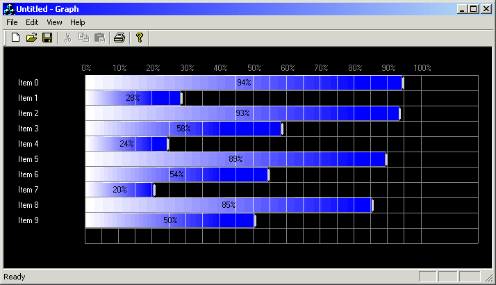

GraphFX - Оболочка для рисования гистограммАвтор: Norm Almond Скачать демонстрашку - 192 Kb  ОписаниеПример показывает рисование давольно красивых гистограмм, очень похожих на те, которые рисуют в журналах при сравнении производительности процессоров. На вид - много всяких возможностей. Компилятор: Visual C++. ИспользованиеДля использования оболочки Далее включите в заголовочный файл отображения "GraphViewFX.h" #include "GraphViewFX.h" Потом наследуйте класс отображения от class CGraphView : public CGraphViewFX Этого достаточно. Для примера был использован произвольный массив значений. Функция |